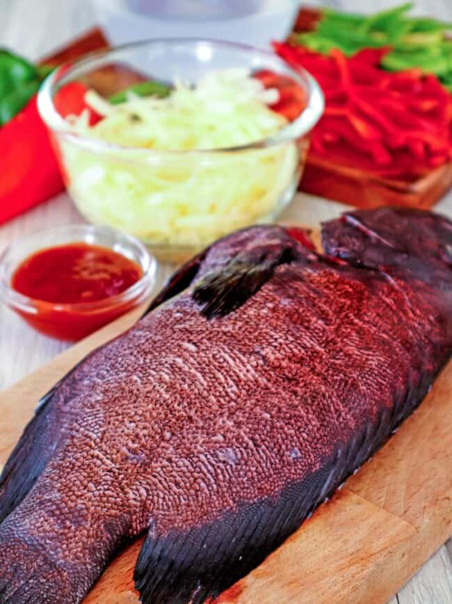
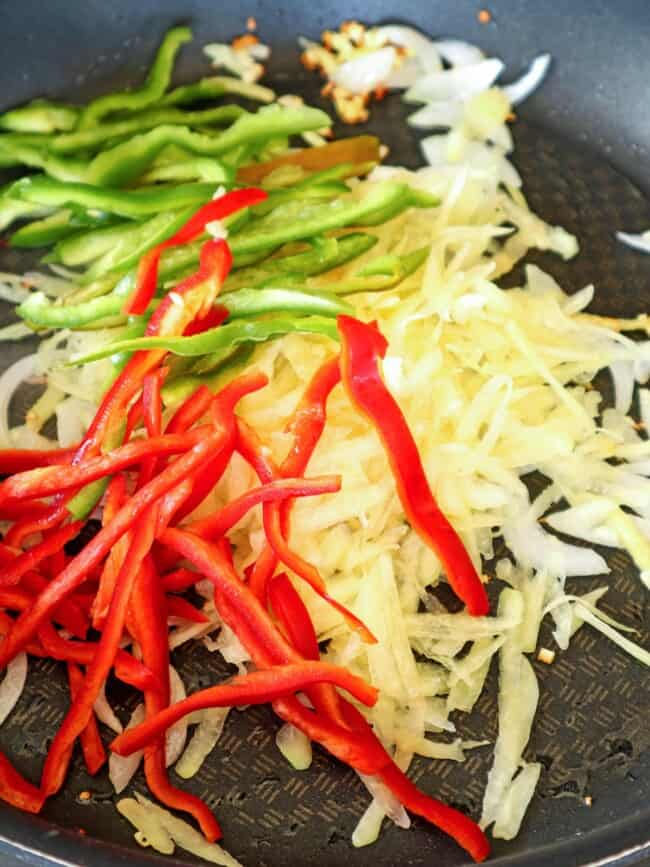

ESCABECHE LAPU LAPU

Escabeche Lapu Lapu is easy to make for family dinners yet fancy enough for special occasions. This Filipino-style sweet and sour fish with pickled vegetables and sweet and tangy sauce is delicious with steamed rice and sure to be a crowd favorite.

Escabeche Lapu-Lapu is one of my party favorites, but I don’t make it often as grouper fish is not always available at the Asian supermarkets I frequent, especially ones that are big enough to feed a crowd.
Although I think a hefty lapu-lapu would be more impressive in a special gathering, this Filipino sweet and sour sauce dish is delicious regardless of the size and kind of fish you use. With crisply-fried whole fish topped with colorful bell peppers, shredded papaya, and a delightful and tangy sauce, it’s sure to be a crowd favorite!
What is in escabeche
Escabeche is a dish popular in Latin and Mediterranean cuisine wherein meat or fish is marinated and cooked in acidic vinegar or citrus juices. Assorted vegetables such as peppers, onions, and carrots are also commonly added for color and texture.
Filipino escabeche is a local adaptation of this Spanish dish. It consists of fish that’s either poached or fried fish, smothered in a sweet and tangy sauce, and garnished with tender-crisp vegetables such as bell peppers and shredded papaya.

Cooking steps
This sweet and sour fish recipe has three components, frying the fish, preparing the vegetables, and making the sauce.
- The recipe uses lapu-lapu or grouper, but any firm-fleshed fish such as tilapia, red snapper (Maya Maya), tanigue, pampano, apahap, or talikitok will work.
- Season the cleaned fish with salt and pepper to taste and fry in hot oil until golden and crispy. You can also steam or poach if preferred.
- Feel free to experiment with other vegetables that are great for pickling such as carrots, red onions, radish (labanos), cucumbers, celery, and cauliflower.
- For best texture, cook the vegetables until tender yet crisp.
- The sauce is made of vinegar and sugar with added ketchup for color and cornstarch for thickening.
- If you prefer less of an acidic and more of a fruity taste, swap part or all of the vinegar with pineapple juice.
- As it will thicken more as it stands and cools, you might want to cook the sauce a little thinner than your desired consistency.
How to serve and store
- Serve with steamed rice for lunch or dinner.
- Although other variants of escabeche can be eaten cold, this Filipino version is best enjoyed hot and fresh or at the very least at room temperature as the sauce tends to congeal as it stands. For best texture, top the fried fish with the vegetables and sauce just when ready to serve.
- To store leftovers, wrap the fish tightly in foil and keep the vegetables and sauce in separate containers. Refrigerate for up to 3 days.
Ingredients
- 1 (2 to 3 pounds) whole Lapu-Lapu
- salt and pepper to taste
- canola oil
- 1 onion, peeled and sliced thinly
- 3 cloves garlic, peeled and minced
- 1 thumb-size ginger, peeled and julienned
- 1/2 small green papaya, peeled and grated
- 1 small red bell pepper, seeded and cut into strips
- 1 small green bell pepper, seeded and cut into strips
- 1 cup vinegar
- 1/4 cup sugar
- 2 tablespoons ketchup
- 1/4 cup water
- 1 tablespoons cornstarch
Instructions
- Clean and gut the fish. Season with salt and pepper to taste.
- In a wide pan over medium heat, heat about 2-inch deep of oil. Add fish and cook, turning once or twice, until golden, crisp, and cooked through. Remove from heat and drain on paper towels. Keep warm.
- In a pan over medium heat, heat about 1 tablespoon of oil. Add onions, garlic, and ginger and cook, stirring occasionally, until softened.
- Add grated papaya and bell peppers and cook, stirring regularly, until tender yet crisp. Remove from pan and keep warm.
- AIn a saucepan over medium heat, combine vinegar, sugar, and ketchup.
- Season with salt and pepper to taste. Bring to a boil.
- In a small bowl, combine cornstarch and water. Stir until smooth. Add to the pan and continue to cook, whisking continuously, for about 1 to 2 minutes or until sauce thickens.
- Place fried fish on a serving platter and garnish with the vegetable mixture. When ready to serve, pour sweet and sour sauce on top.
Notes
- If you prefer less of an acidic and more of a fruity taste, swap part or all of the vinegar with pineapple juice.